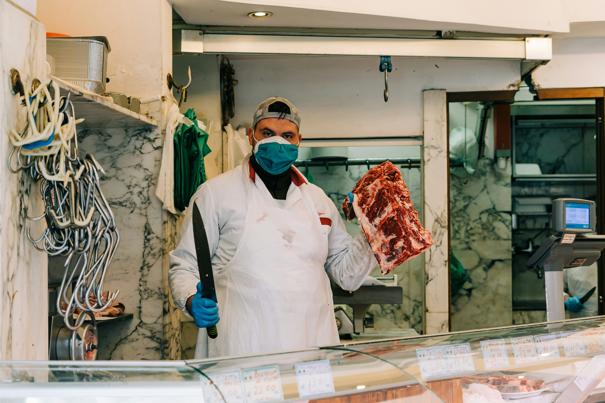

¡Bienvenido/a a nuestra Tienda Gourmet!
Disfruta de los mejores cortes de carne de llama de calidad Premium
Nuestros valores
- Tradición: Honramos la tradición ancestral de la crianza de llamas y preservamos las técnicas de producción artesanal.
- Sostenibilidad: Nos comprometemos con la producción sostenible de carne de llama, respetando el medio ambiente y el bienestar animal.
- Salud: Creemos en los beneficios nutricionales de la carne de llama y promovemos una alimentación saludable y balanceada.
- Calidad: Ofrecemos carne de llama fresca y de la mejor calidad, seleccionada cuidadosamente para garantizar su sabor y textura únicos.
Nuestra visión
Ser reconocidos como líderes en la producción y venta de carne de llama de alta calidad, promoviendo su consumo a nivel nacional e internacional y posicionándonos como embajadores de la gastronomía andina.
Nuestra misión
Nuestra misión es conectar a las personas con la naturaleza y las tradiciones a través de la carne de llama. Queremos ofrecer un producto saludable y delicioso, contribuyendo al desarrollo de las comunidades productoras y promoviendo una alimentación consciente y sostenible.